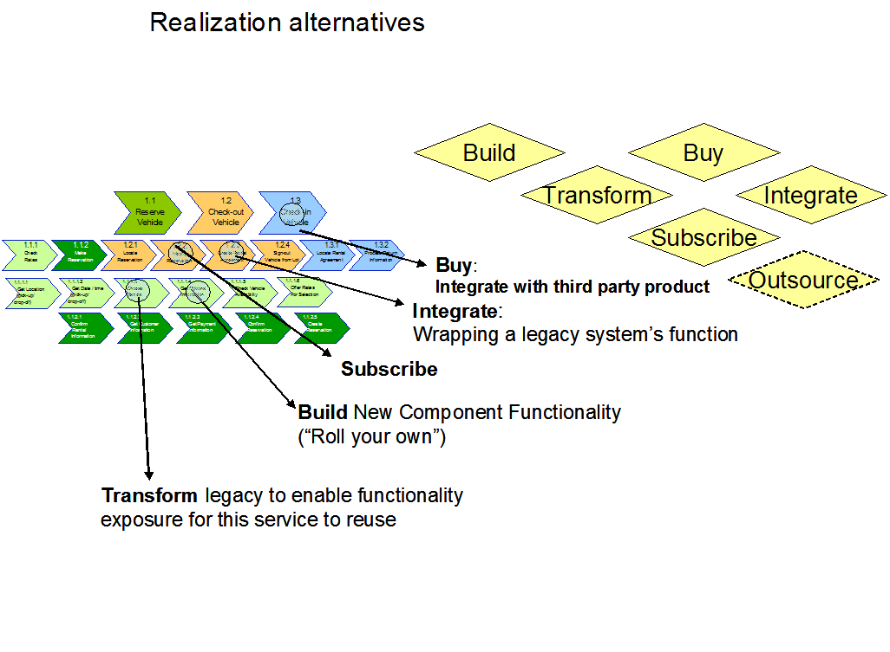

| Task: Validate Realization Decision |
 |
|
Purpose
To review and validate realization decisions. |
Relationships
| Roles | Primary Performer: | Additional Performers: |
|---|---|---|
| Inputs | Mandatory: | Optional:
|
| Outputs |
|
|
Main Description
| Service Realization Decisions are associated with service components. Each service component can be considered a container
of functionality that is needed to realize a service. It is composed of or uses both functional and technical components.
It is important to decide how these service components will be realized. There are a number of alternatives to be considered relative to deciding how to realize services as shown in the diagram below. This is not the straightforward build versus buy decision: other interesting options come into the picture. "Transform"-ation uses a combination of techniques including business rules extraction to pull out a segment of functionality to be used independently for the realization of the component's service. "Integrate" is the "wrappering" of legacy functionality to achieve functionality; integration is invocation-based. Subscription is based on the availability of a publish-subscribe model (in a message-oriented middleware context) in which a consumer subscribes to the services provided by the provider. One of the options is to outsource (e.g., Payroll) the functionality out to some other business. As the web services and Business to business integration becomes more prevalent, this option will also be considered for use on a wider basis.  Realization alternativesService Realization Decisions are associated with service components. Each service component can be considered a container of functionality that is needed to realize a service. It is composed of or uses both functional and technical components. It is important to decide how these service components will be realized. It is not a simple "buy or build" decision. There are other considerations that need to be looked at such as: · Transformation which may involve extraction of rules or making a clone of existing code and rewriting it to perform as a component with defined interface. · Integration with messaging or with wrappers. To help in this process, the Realization Matrix template can be used to document decisions. Realization Decisions Regarding Deployment During the deployment of component-based systems that form the foundation of an SOA, there will most likely be a common set of functional and/or technical components. A realization decision would be whether to allocate a common technical component to a given service component or not. That decision will be based on non-functional requirements and the operational model. However, we recognize that the technical component may be deployed once within the deployment unit of the service component that is the best fit for it from an operational perspective. Alternatively, the technical components may be deployed independently in their own layer or deployment unit and accessed by other components (service, functional or technical). In the same way, the deployment of a database may be confined to an service component and thus not be visible outside of that component. All access to the data services would be through that service component. Alternatively, if multiple service components and other applications need access to a given database, then that database should obviously be deployed external to the service component BUT have a set of data services encapsulate access to it to serve as a single point of access. This ensures that every access to the database will involve the same application of appropriate policies, rules and transformations in a consistent manner. |
| © Copyright IBM Corp. 1987, 2012 All Rights Reserved Property of IBM These materials are intended only for use as part of an IBM engagement |